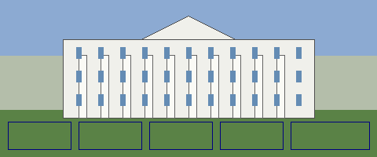

Welcome to the White House
Period verb. Empty / trap never writes.
Interactive Citizens' Handbook · October 1994
Period verb. Empty / trap never writes.
Interactive Citizens' Handbook · October 1994
Click a region of the building to explore

If your browser does not support imagemaps, use the icon table below.
Executive Branch | The First Family | Tours |
What's New | Publications | Write the President |
This Interactive Citizens' Handbook is an experiment in government on the Internet. If you have trouble reaching a page, try again later — the Net is busy!
The White House · Washington, D.C. · October 1994
Next:NASA
machine · not the chip · incomplete never writes · itt94-wh-map-lx
Next:NASA
2× walk · ★ CSotD · HotWired · NASA · Yahoo · CERN · CERN · about · NCSA · NCSA · about · Lycos · Lycos · about · WebCrawler · IUMA · IUMA · about · Fish Cam · Fish Cam · about · CSotD · about · Mosaic · Mosaic · about · CNN · aliweb · apple · bbc · bbs · bbs · about · berkeley · cisco · cmu · compuserve · exploratorium · exploratorium · about · firstvirtual · galaxy · gnn · goodtimes · goodtimes · about · harvest · ibm · imdb · infoseek · intel · jumpstation · loc · Microsoft · mit · netmarket · NYT · pathfinder · pbs · personal · pizzahut · prodigy · smithsonian · stanford · startingpoint · sun · time · uiuc · weather · weblouvre · weblouvre · about · well · wwworm
White House · 1994-true · Cool Site of the Day is the chip · incomplete never writes · itt94-pop3-whitehouse
1994. Cool Site of the Day is the chip. Mosaic / 14.4. No Amazon SSL.
M3: open White House then honesty. Empty / trap never writes.
M2 miss / wall:in-year miss / more · never writes
Next:NASA